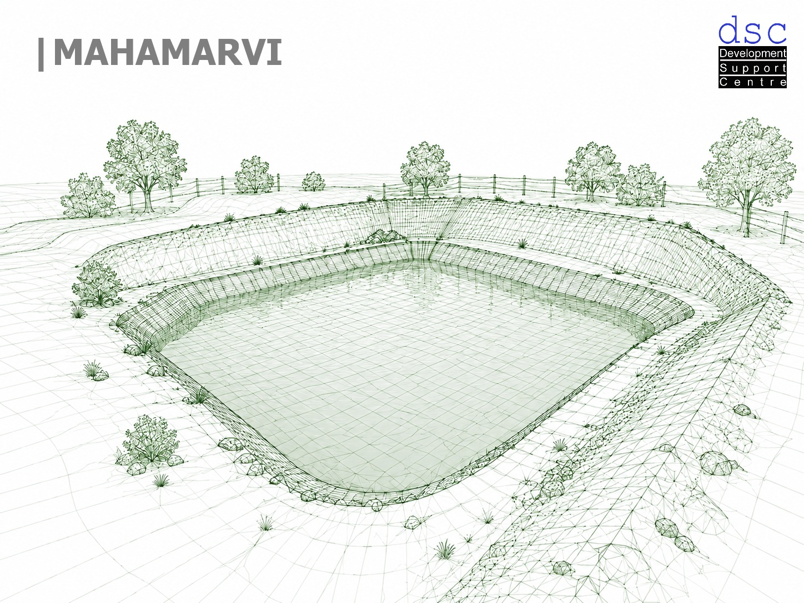
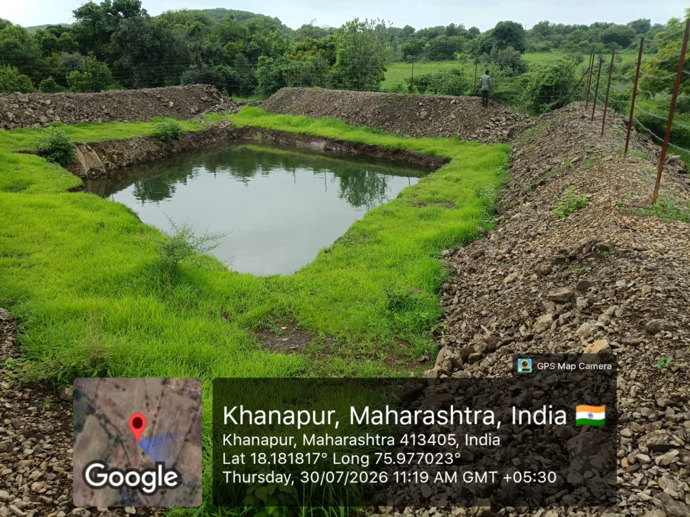
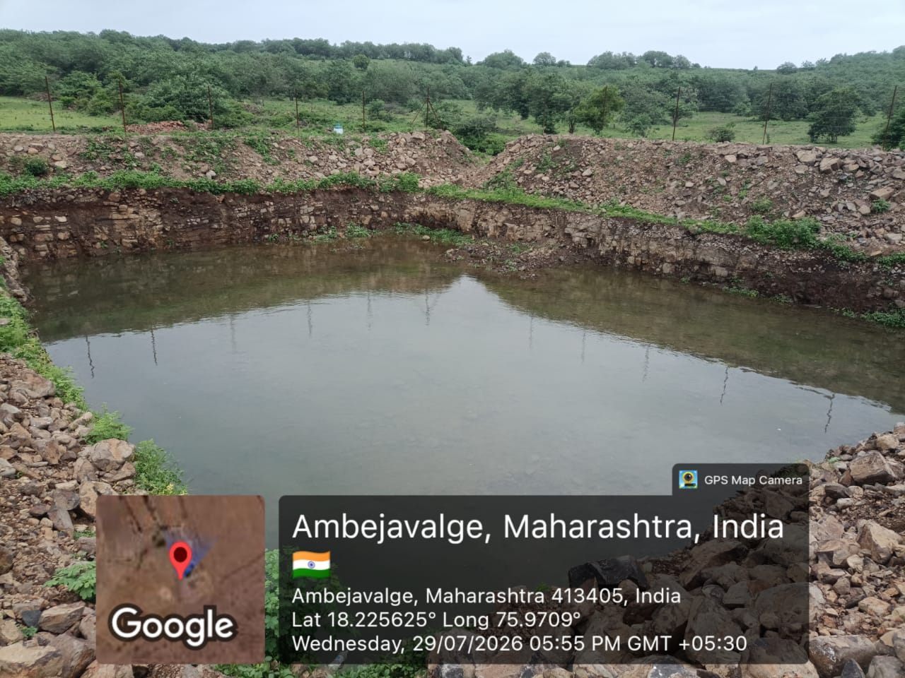
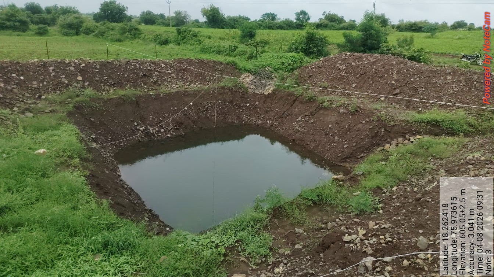

Groundwater • Community • Climate Resilience
धाराशिव में बारिश की बूँदें बनी उम्मीदें
जहाँ बारिश की राह देखते-देखते किसानों की आँखें पथरा जाती थीं, वहाँ पानी की हर बूँद अब उम्मीद का उजास बनकर तैर रही है।
MAHAMARVI Action Research Project के माध्यम से महाराष्ट्र के धाराशिव जिले के पाँच गाँव—सोनेगांव, अंबेजवलगे, भानसगांव, खानापुर और घाटंग्री—में जल सुरक्षा के लिए सहभागी प्रयासों ने नई दिशा बनाई है।
MARVI एक सहभागितापूर्ण पहल है, जिसमें ग्रामीण केवल लाभार्थी नहीं बल्कि जल प्रबंधन के सक्रिय भागीदार बनते हैं। आईआईटी बॉम्बे, वेस्टर्न सिडनी यूनिवर्सिटी और आईसीआईसीआई फाउंडेशन जैसे संस्थानों के समन्वय के साथ, डीएससी और किसानों की मैदानी सहभागिता ने इस प्रयास को जमीन पर उतारा।
August 21, 2026
साझेदारी से समाधान तक
भूजल की समझ, गाँव की भागीदारी और बारिश की हर बूँद
लगातार बैठकों और भूजल जानकारों के उन्मुखीकरण के बाद, Geophysical Survey तथा गाँव वालों की सहभागिता से बारिश के पानी को सहेजने के नए उपाय खोजे गए।
इन प्रयासों से 16 नए फार्म पॉन्ड और 112 रिचार्ज पिट बने। परियोजना दस्तावेज़ के अनुसार, इन संरचनाओं के माध्यम से 10,336 घन मीटर पानी को “ज़मीन की तिजोरी” में सुरक्षित करने का प्रयास हुआ।
कार्य क्षेत्र
धाराशिव के पाँच गाँव
सोनेगांव
अंबेजवलगे
भानसगांव
खानापुर
घाटंग्री
Field Evidence
बारिश के बाद पानी से भरे फार्म पॉन्ड
मैदानी तस्वीरें दर्शाती हैं कि वर्षा जल को खेत स्तर पर रोकने और भूजल पुनर्भरण को बढ़ावा देने के लिए संरचनाएँ किस प्रकार कार्य कर रही हैं।



“यह सिर्फ गड्ढों में पानी भरने की कहानी नहीं है… यह उस विश्वास की कहानी है, जहाँ बूँद-बूँद पानी मिलकर एक पूरे समाज को आत्मनिर्भर बना रहा है।”
MAHAMARVI की यह कहानी इस विचार को सामने रखती है कि टिकाऊ भूजल प्रबंधन केवल तकनीकी संरचनाओं से नहीं, बल्कि स्थानीय लोगों की समझ, भागीदारी और साझा जिम्मेदारी से मजबूत होता है।